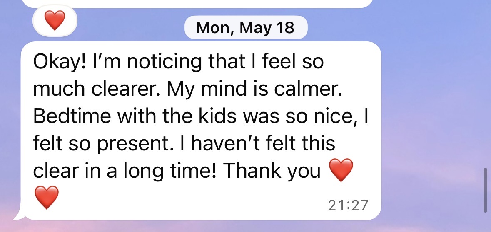
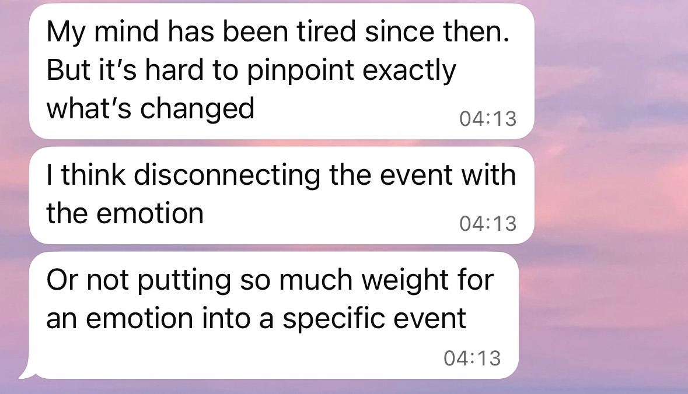
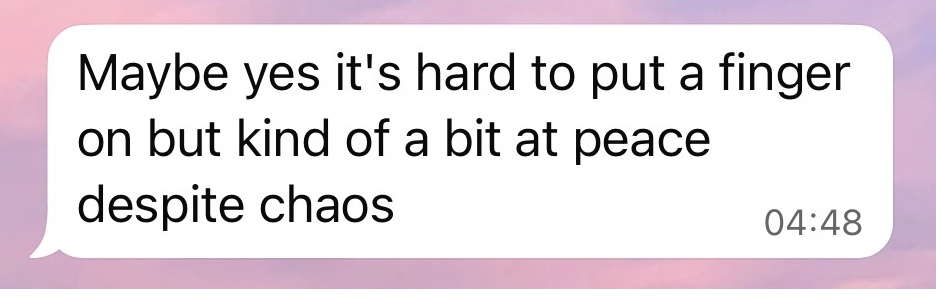
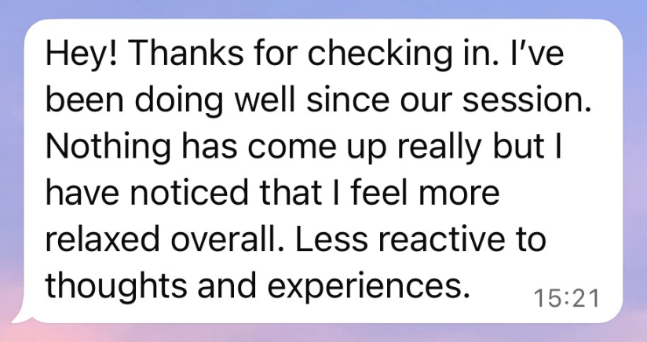

Don’t take it from me.
Choosing someone to support you is personal. It means making space for yourself, and trusting someone with the things that matter to you.
I can share how I work, but there’s something different about hearing from people who have experienced it for themselves.
Here are their reflections, in their own words. Take your time, read their stories, and see what resonates with you.
Read their stories
Real experiences
From people I’ve worked with
Everyone’s process is different, but many people notice meaningful changes in how they feel, react, and relate to the issue they came in with.
"A recent breakup was causing me a lot of anxiety and nervous system dysregulation. A friend recommended Danielle as a mentor and guide to support me through my healing journey. After only two sessions, I've noticed I feel more in tune with myself. My emotions feel less overwhelming, and I'm not as easily controlled by them. It's been a grounding and supportive experience so far, and I'm looking forward to continuing."
"After just one session, I felt such a noticeable shift. Danielle helped me get to the core of where that feeling came from and how deeply that belief had been living inside of me. Immediately afterward, I felt such a deep sense of peace and calm, and that shift continued to show up in the days after."
"This work is helping me develop more compassion for myself and understand why I am the way I am. I'm beginning to recognize that the patterns I developed were not my fault."
"באתי לעבוד עם דניאל כי חיפשתי שיטה שמתמקדת באופן ספציפי בטיפול בטראומות מבלי שאצטרך שוב לדבר על הכל מההתחלה. הרגשתי מאוסה מטיפולים פסיכולוגים שאני צריכה בכל פעם לספר את סיפור חיי להזכר בהכל ובסוף להרגיש מרוקנת ועצובה.
עם דניאל זה הפוך, עשיתי אצלה כבר 3 מפגשים ובכל פעם אני מרגישה שאני יוצאת עם אנרגיות וכוחות מהמפגש. אף על פי שהסשן עצמו מאוד מורכב ונוגע בנקודות רגישות ועמוקות בחיי.
אני מרגישה שהטיפול עזר לי להתחבר לאינטואיציה של הגרון שלי. למדתי כשכואב לי הגרון זה כי אני לא אומרת משהו ולאחר תשאול עם עצמי ברגע שאני מבטאת אותו מול הבן זוג או מול הטיפול עם דניאל אני מרגישה הקלה.
מה שמיוחד בIEMT זה שהתנועות עיניים עוקפות אצלי את המנגנוני הגנה של המיינד, הוא גורם לי להרגיש יותר בעוצמות, להתחבר לכאב, לאינטואיציה ולהזכר בדברים מהעבר ולהסתכל עליהם מפרספקטיבה חדשה של הכלה ומודעות.
הדבר הכי חזק בטיפול זה שאני לומדת להרגיש, עם כאב, עם אותנטיות, אני מצליחה לנטרל לאט לאט את המנגונני הגנה שליווי אותי לאורך כל הילדות. אני מרגישה אצל דניאל בטיפול הכרה והכלה מצידה בכאב ובכל מה שעולה לי בטיפול. הנוכחות שלה חלק מהותי מהתהליך. היא בחורה מקסימה ונעימה והאנרגיה שלה מדהימה ורגישה.
אני עוד בתהליך ויש לי מסע לעבור אבל ללא ספק אני מתכננת להמשיך עם דניאל לאורך תקופה."
In their own voices
Moshe | From Triggered to Calm
“The process was very soothing. It felt like I was receiving a brain massage from the inside and a workout for my eyes, and I felt the effects within seconds, if not immediately.”
Basia | From Procrastination to Taking Action
“When the session ended, I felt all my fears went away and I'm able to start new projects and I start doing the things I wanted for my business.”
Julia | Clear and Grounded
“I'm less attached to the emotion itself. I'm more like, this is going to pass. I'm a little bit less upset at my emotions, and it's been interesting.”
Ash | Finding the Confidence to Follow Her Dreams
“I met Danielle at this pivotal moment in my life as I'm starting to embark on my dreams and leading my second yoga retreat.”
Inbal | גילתה בתוכה מקום שלא ידעה שקיים
״עד שלא תעשו את זה בעצמכם, אתם לא תבינו במה מדובר.״
Silke | Deep Transformation After One Session
“But after the session now, I can tell that this is deep transformational work. And I am mind-blown, and still so touched by your presence and how you held the space.”
Ella | שחרור רגשי ותחושת הקלה
״תחושה יותר קלילה, תחושה יותר נינוחה, דברים גם מתחילים קצת לזרום אחרת בחיים״
Lihi | Memories Becoming Less Overwhelming
“I felt like something calmed down and it was much less overwhelming for me to have a lot of topics in my life that are overflowing at the same time.”
Client messages
Words shared along the way




Testimonials reflect individual experiences. Results and the number of sessions needed vary from person to person.